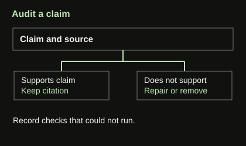

Evidence and verification audit
Inspect what ran, which identities remain uncertain and where the evidence ends.
On this page
Craft edition review
The extended edition adds complete engineering, retrieval and automation projects. Each project includes exact inputs, a broken or rejected state, a worked trace, verification and transfer exercises. Prompt files and task templates remain editable outside the browser.


A second reviewer read the workshops as a learner. The review found missing scratch-directory commands, an omitted shell assumption and an incomplete inspection command. The revised lessons include those steps. Read the resolved findings.
The source study map accounts for all 131 records in the original edition. It states which originals received a new direct read, which support related exercises, and which serve as references. It also records evidence gaps. New source records identify code functions, release tags or specific passages.
The community search log records selected Reddit, X, Substack and GitHub evidence. Engagement values are observed snapshots. Selected source text came from indexed or mirrored captures when direct retrieval failed.
The integrated run record includes exit status and output for each command. Artifact hashes identify the resulting checkpoints, evaluation and draft. These local programs use synthetic data and deterministic adapters. Live-model handoffs remain proposed exercises.
What the evidence can establish
- Execution date
- November 20, 2026, New York.
- Evidence cutoff
- November 20, 2026. Future terms appear only as announcements known on that date.
- Experiment date
- November 20, 2026. The run record identifies the local environment.
- Retrieval date
- November 20, 2026. See each source record for its original publication and applicable release. A page with no stated publication date shows “Not in source”.
| Evidence label | Example in this guide | What it establishes |
|---|---|---|
| Documented capability | A vendor names an interface and eligible plan. | The documented offer at cutoff. Account access can differ. |
| Firsthand report | Howell describes a newsletter routine. | The operator's account. A screenshot cannot establish profit or intervention rate. |
| Observed local result | A repeated write returns to a single reviewable draft in the fault test. | The delivered code on the stated fixtures and machine. |
| Inference | Replace repeated model formatting with a deterministic function. | A design choice to test on your own examples. |
| Unverified | An identity without a unique public link. | A lead retained for follow-up. Do not attribute a workflow to this name. |
Search log and coverage gaps
Search began with the outcome, product and named operator. A second pass searched for conflicting results, access restrictions and failures. Follow-up searches recovered an actual newsletter archive and newer access terms. The final targeted passes below did not change the recommended practice paths.
| Channel and sample query | Where it contributed | Remaining gap |
|---|---|---|
| Official product pages, release notes and help. “Grok Bot 1.0”; “dots Enterprise November 18”; “Gemini 4 Neon access”. | Version, rollout, plan and interface in the product index. | Documentation can change. No live account entitlement checks. |
| GitHub code, issues, tags and examples. “filesystem read-only confine-roots”; “Cavemen skill”; “Hallmark skill owner”. | Resource identity, versions, permissions and maintenance in the catalog. | Search did not inspect every issue or every similarly named repository. |
| Engineering blogs and talks. “effective harnesses long-running agents”; “Codex repository map”; “Lauren Tan release manager Grok Bot”. | Context design, delivery checks, handoffs and release examples. [E01] Cases. | Public engineering accounts omit internal data and denominators. |
| X, Reddit and developer communities. Named handles, “Grok Bot usage limits”, “prompt caching not applied”, “Cavemen token claims”. | Failure hypotheses, resource names and operator posts. Mirrors can make an author's post readable. | Search coverage varies by log-in and indexing. Mirrors of one post count once. |
| YouTube and podcasts. “Billy Howell Grok Bot Greg Isenberg newsletter routines”; “Lauren Tan All Code Is Slop”. | Publisher chapter times and guest accounts. [O01] [C27]. | Some video pages throttled direct access. Specific times appear only when the publisher supplied them. |
| Newsletters, Substack, Medium, technical blogs. “Grok Bot business workflow newsletter cost failure”, “agent code review time”. | Discovery of a business artifact and the operator's own description. [O02] [C05]. | Secondary commentary alone cannot establish model access or business results. |
| Practitioner posts, podcast interviews, code and pull requests. | The field notes pair a reported method with an artifact or a proposed local test. | Published examples often omit the cost of failed attempts. |
| Internal usage reports from OpenAI and Anthropic. | The usage chapter checks the population, unit, period and denominator before it compares numbers. | Neither lab discloses the requested employee-wide daily token mean in these sources. |
| Research papers, study follow-ups and counterexamples. “METR developer productivity selection bias”; “ML data leakage group split”. | Measurement design and limits. [E04] [E05] [C13]. | Neither historical field results nor a synthetic demonstration establish a general productivity effect. |
Two closing checks revisited the business case for independent cost or staffing records, and searched for evidence that a hosted model's advantage survives matched quality and review costs. The guide leaves both open. Source breadth describes the search, and carries no claim of exhaustive coverage.
Requirements and checks
| Requirement | Page or artifact | Evidence and verification | Limit |
|---|---|---|---|
| 1, 4. Learner outcomes and method | Start, paths, foundations | Diagnostic, worked examples, refutable hypotheses, practice and recovery decisions. | Learning transfer needs a later independent attempt. |
| 2, 3. Identity and time | Product register, people, named resources | Separate publication, retrieval, execution and release fields. Preserve ambiguous aliases. | Open identities and actual account access remain visible in their rows. |
| 5. Three graphs | Task, evidence, learning | Nodes name artifacts or concepts. Edges identify dependencies and evidence relations. | These diagrams focus on decisions that change practice. |
| 6, 7. Research and substantive questions | Practitioners, business, engineering, research | Primary documentation, firsthand accounts, operating artifacts, counterexamples, limits and source links. | Actual company costs, labor and revenue often remain undisclosed. |
| 8. Inference and executable loop | Inference choices, reference loop | Fault checks exercise checkpoints, budgets, recovery and artifact verification. | Fixed local decisions. No hosted inference benchmark. |
| 9, 10. Resources and tutorials | Catalog, tutorials, product exercises | Documented access, workflow prompts, version references, risks, expected output and next tests. | Provider procedures were researched. The labs establish local behavior only. |
| 11. Prompt library | Templates and examples | Each of 14 tasks has a reusable contract, a filled example and a verification step. | Prompts require domain inputs and honest graders. |
| 12. Three labs | Practical labs and recorded outputs | Original service fails as expected. Changed service, benchmark and recovery checks pass. | Synthetic data on one operating system. Human labor and electricity unmetered. |
| 13, 14. Learning experience and offline website | Study routes, chapter navigation, local full-text search and figures. | Book-style problem, visual model, worked trace, boundary, retrieval and transfer. See the verification record below. | Original web sources and hosted product exercises need connectivity. |
| 15, 16. Independent review and repair | Review record, static verifier | Review compared claims with primary evidence and tested a corrupted draft. | Checks have a specific scope. Screen readers and every possible browser remain outside this run. |
| 17. Delivery | Entry page, source data, examples and downloadable archive | The site uses bundled scripts, diagrams and licensed fonts. | Open the extracted directory to preserve relative links. |
Independent review and repairs
An independent reviewer checked the brief, original sources, prose and runnable examples. The review found that corrupt non-UTF-8 bytes stopped draft recovery. It also found a stale Filesystem package pin and incomplete access descriptions for Gemini, Codex and dots.
The revised guide uses the patched package pin, narrows its example permissions, and distinguishes the published access tiers. The report lab compares bytes and tests damaged output. The table reports final verification separately from provider documentation.
What passed in this edition
| Check | Observed result |
|---|---|
| Every generated page | Chrome checked phone, tablet and desktop widths. Bundled fonts loaded. Images decoded. Each page stayed within the viewport. The linked record lists each page and width. |
| Offline controls | Search, navigation, three collapsible maps, the benchmark and the token calculator passed. The workshop checks also verified diagram pairs, downloaded prompt targets, complete code copies and progress across reloads. Clipboard tests used a local test double. The browser recorded no external asset requests. |
| Runnable projects | The original labs passed 17 tests. The new engineering, retrieval and automation projects passed 35 tests on their final versions. Their planned failures and rejected candidates produced the expected results. The operator fixture checked a retry and a missing source. |
| Independent lesson review | A reviewer checked the manual steps, predictions, expected outputs and transfer exercises. The revised chapters include the missing setup and inspection commands. |
Inspect the browser results by page and width. Inspect the integrated workflow checks. Inspect the resolved lesson review.